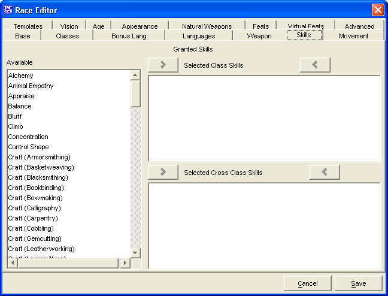

The Skills Tab is used to add a Granted Skill for the Race being created.
The three Granted Skill windows, Available, All Granted and A choice from these will be granted are used to create a list of Granted Skills.
The Cancel and Save buttons, which appear on every tab, are used to either cancel the Race creation or save it to the customRaces.lst file.